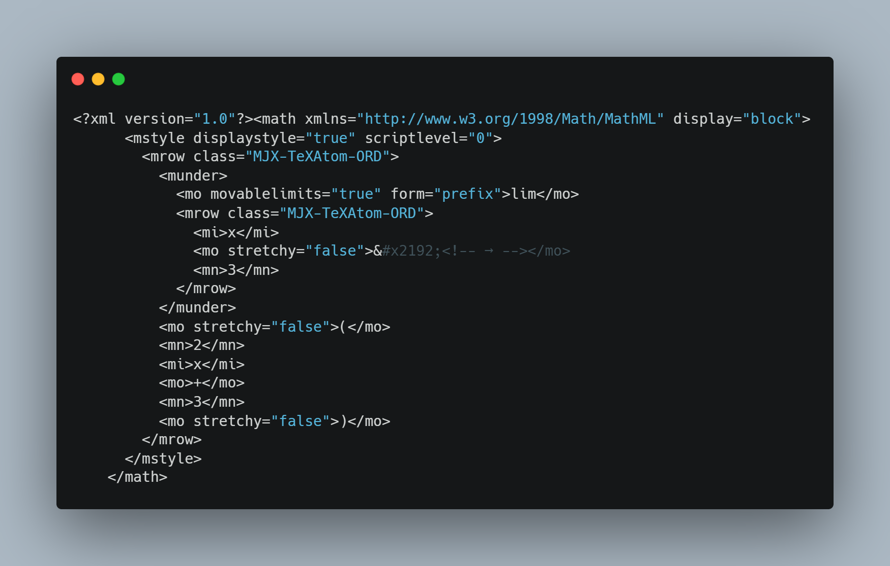

| Home | Rumus | soal |
|
Selamat Datang Di Tugas Besar Kalkulus |
Di atas adalah Contoh Soal Dan jawaban Tentang Teorema Limit

Di atas adalah Contoh Turunan Implisit
Di atas adalah contoh integral Tentu / sifat simetri
1.Teorema Limit= Misal n bilangan bulat positif, k bilangan real,
f (x)
dan
g(x)
adalah fungsi-fungsi yang memiliki
limit di titik
x = c
2.Turunan implisit= Dari persamaan f (x, y) = 0 ruas kiri dan ruas kanan sama-sama diturunkan (di deferensialkan) terhadap x dengan pengertian bahwa y adalah fungsi x.
3. Sifat Penambahan Selang Teorema integral tentu= Jika f terintegralkan pada suatu selang yang mengandung tiga titik a, b dan c, maka

| Nama: | : | Muhammad Yusuf Hiqmal Miko | |
| JenisKelamin | : | Laki laki | |
| Agama | : | islam | |
| Matkul | : | Kalkulus | |
| No.Telp | : | 087873695111 |